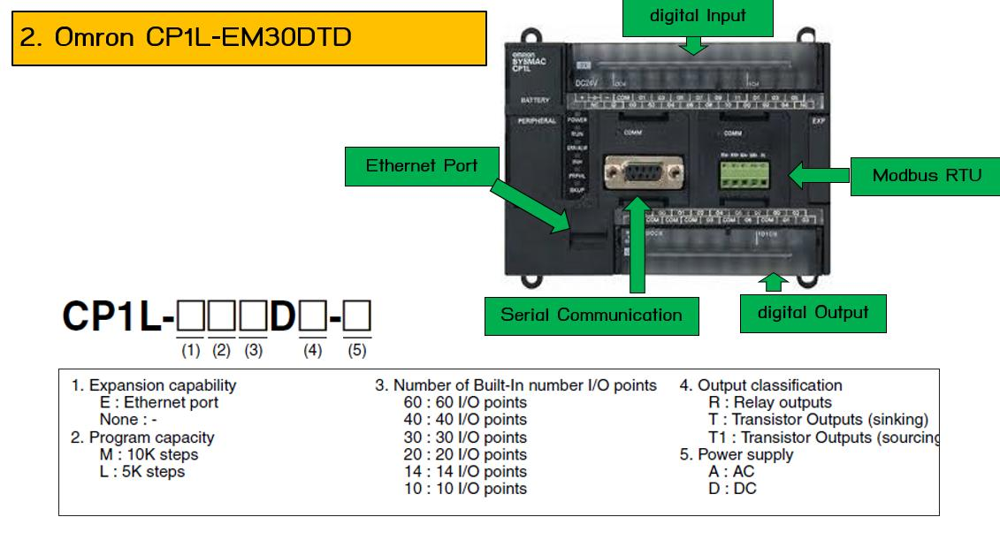
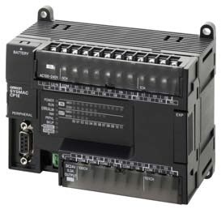
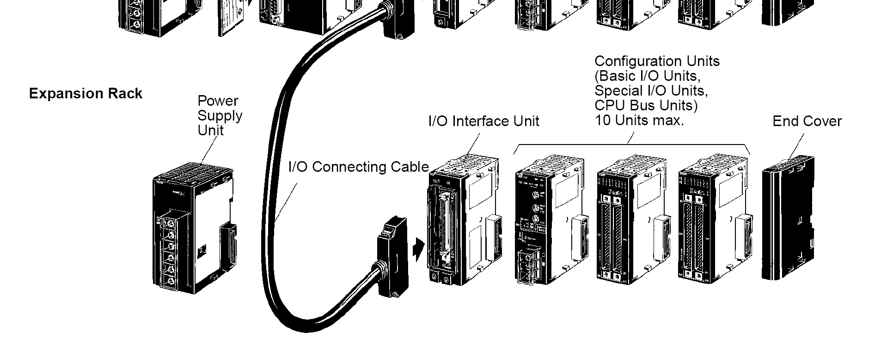
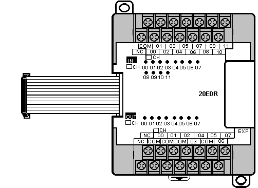
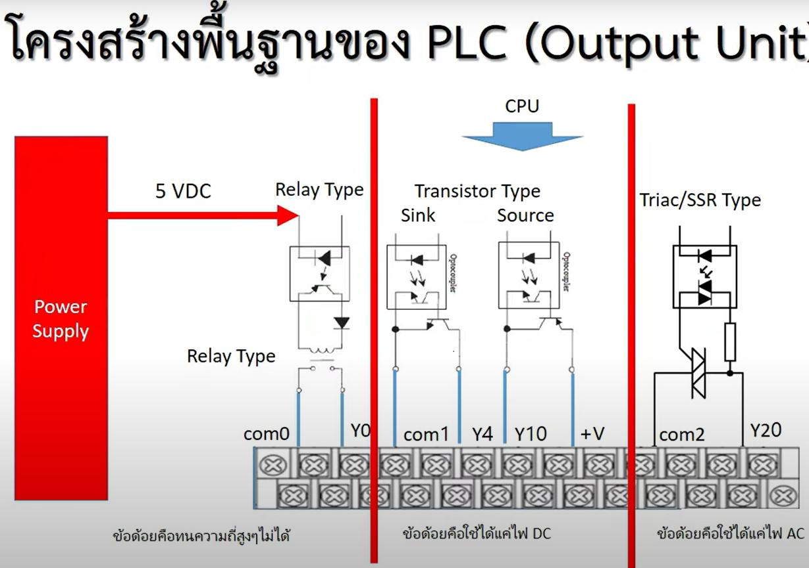
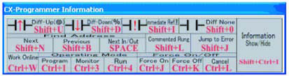
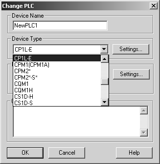

รู้จัก Omron PLC — CP1L & CPM2A
Omron เป็นผู้ผลิต PLC จากญี่ปุ่นที่ใช้กันแพร่หลายในโรงงานไทย — บทนี้พาเข้าใจตระกูล PLC ของ Omron ตั้งแต่รุ่นเก่า (CPM2A) จนถึงรุ่นปัจจุบัน (CP1L, CP2E) และรู้ว่าตำราเรียนเล่มไหนยังใช้ได้, รุ่นไหนต้องอัปเกรด
PLC คืออะไร — ทบทวนสั้น ๆ
ถ้ายังไม่คุ้นกับ Concept พื้นฐาน → ดูที่ บท M01 ก่อน (เป็น Concept เดียวกัน แค่เปลี่ยน Brand) — ตรงนี้จะข้ามไป Hardware เลย
ตระกูล Omron PLC
Omron มี PLC หลายระดับตามขนาดงาน:
| ซีรีส์ | ขนาด | สถานะ (May 2026) | หมายเหตุ |
|---|---|---|---|
CPM1A / CPM2A | Micro | เลิกผลิตแล้ว มี.ค. 2015 | ตำราของอ. อุทัยใช้รุ่นนี้ — เรียน Concept ได้, อย่าซื้อใหม่ |
CP1E | Micro | เลิกผลิต ก.พ. 2022 | เคยเป็น successor ของ CPM2A — ตอนนี้ใช้ CP2E แทน |
CP1L / CP1L-E | Micro | ยังขายอยู่ | รุ่นที่ห้อง Lab เราใช้ — มี Ethernet ในตัว |
CP1H | Micro+ | ยังขายอยู่ | เร็วกว่า + High-speed counter 4 ช่อง · งาน Positioning |
CP2E | Micro | รุ่นล่าสุด · เปิดตัว 2019 | แนะนำสำหรับงานใหม่ — มี Function Block ในตัว, 2 Ethernet, OPC UA |
CJ2 | Modular | Legacy | Mid-range modular — ยังขายแต่ Omron แนะนำให้ใช้ NX1P/NX102 แทน |
NJ / NX series | Machine Auto | รุ่น Top | Modern · IEC 61131-3 · Sysmac Studio (ไม่ใช่ CX-Programmer แล้ว) |
CP1L — รุ่นที่ Lab เราใช้




การถอดรหัสรุ่น
เช่น CP1L-EM30DT-D หมายความว่า:
💡 ลองคลิกที่แต่ละส่วน (เช่น R, M, -A) เพื่อดูตัวเลือกอื่น ๆ ของซีรีส์ CP1L
คุณสมบัติของ CP1L-EM30DT-D
ความแตกต่างจาก Mitsubishi FX5U
| Omron CP1L | Mitsubishi FX5U | |
|---|---|---|
| IDE | CX-Programmer (ในชุด CX-One) | GX Works3 |
| เลข I/O | Decimal (10 จุดต่อ block) | Octal (X0–X17 = 16 จุด) |
| Input bit ตัวอย่าง | 0.00 ถึง 0.05 | X0 ถึง X17 |
| Output bit ตัวอย่าง | 100.00 ถึง 100.05 | Y0 ถึง Y17 |
| Internal bit | W0.00 (Word area) | M0 (Internal relay) |
| Data register | D0 (เหมือนกัน!) | D0 (เหมือนกัน!) |
| Timer | T0..T4095 + TIM/TIMH | T0..T511 + OUT/OUTH/OUTHS |
| Counter | C0..C4095 + CNT/CNTR | C0..C255 + OUT C# K# |
| SET/RST | SET / RSET (R เพิ่ม E) | SET / RST |
| KEEP | KEEP(11) — Omron มี FF เฉพาะ | ใช้ SET/RST แทน |
0.00 = word 0, bit 0.
ส่วน Mitsubishi ไม่มี "." (ทำเพราะใช้ Octal ในตำแหน่ง bit) — ทำให้ Omron Address ดูยาวกว่า
การจ่ายไฟและ Sink/Source
CP1L-EM30DT-D รับไฟ DC 24V ที่ขั้ว L1+ / L2- (ต่างจาก CP1L-EM30DT-A
ซึ่งรับ AC 100-240V) — และ Output แบบ Transistor Sink:

เซ็นเซอร์และ Sink/Source ของ Omron ทำงานเหมือนกันกับ Mitsubishi — ดูบท M03 — เซ็นเซอร์ & I/O สำหรับรายละเอียดทั่วไป (NPN vs PNP, BN/BK/BU, แค่เปลี่ยน address ของ PLC)
CX-Programmer + CX-One Suite
CX-Programmer ไม่ได้มาคนเดียว — มาเป็นชุด CX-One ที่รวมหลายเครื่องมือสำหรับงาน Automation:


เริ่มเรียนต่อ
เมื่อเข้าใจ Hardware แล้ว ขั้นถัดไป:
-
ติดตั้ง CX-Programmer
ดาวน์โหลด CX-One Trial จากเว็บไซต์ Omron — CX-Programmer เป็นซอฟต์แวร์หลักที่ใช้กับ CP1/CP2 ทั้งตระกูล
CX-Programmer ปัจจุบัน (v9.x) ใช้กับ CP1L, CP1E, CP1H, CP2E ได้ทั้งหมด - เรียน Ladder ใน CX-Programmer ไปบท O02 — CX-Programmer Ladder
- ลอง FBD ไปบท O03 — Function Block Diagram (ใบงาน FBD + Temperature ของภาควิชา)
- สื่อสารกับอุปกรณ์ภาคสนาม บท O04 (Inverter), O05 (E5CC)
- ทำ SCADA บท O06 — CX-Supervisor สำหรับ Visualization ระดับเหนือกว่า HMI